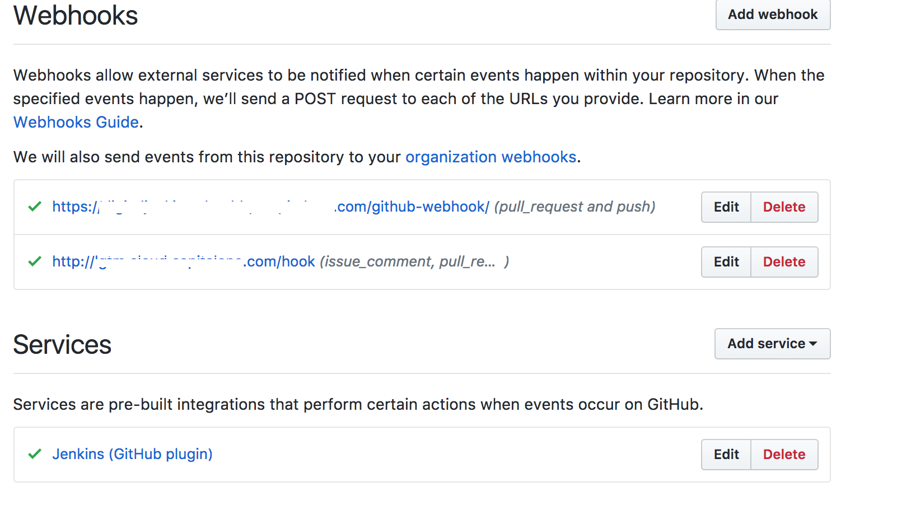
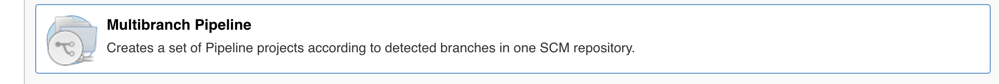
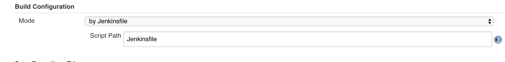
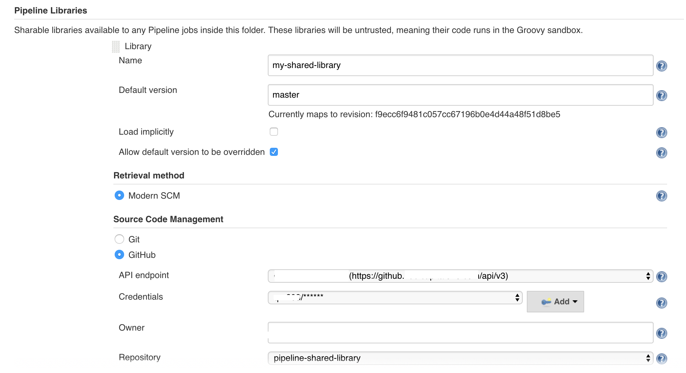
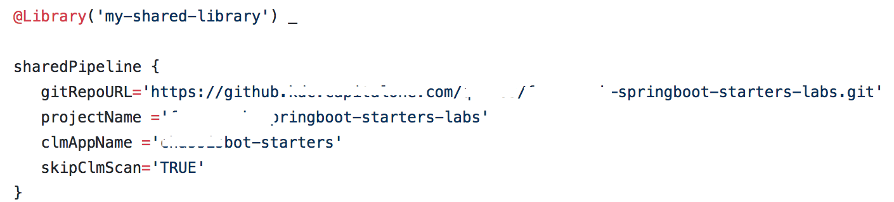

Jenkins 2.x
PR plugin & Shared Libraries
Preethy Manohar
Capital One
11/15/2017
Jenkins 2.x - PR plugin
Why ?
- Existing PR plugin : Caboose
- Leverage Enterprise Jenkins capabilities
- Retire Caboose
- Save infrastrucure cost used by Caboose
PR plugin with multibranch
How ?
Enable webhook in github

Create PR plugin with multibranch
How ?
- Create a mulitbranch pipeline in Jenkins
- Configure the pipeline to use Jenkinsfile in the repo


Jenkins Shared Libraries
What is it?
Write code having common patterns once and store the scripts in SCM repository to share with various projects.
Why Shared Libraries ?
Common patterns are likely to emerge in integration and delivery pipelines when:
- building mulitple microservices
- applications are built on similar technology stack
- deploy applications in a standardized way
Benefits of Shared Libraries
- Centralize Jenkins Pipeline configuration.
- Avoid copy and paste code from one Jenkinsfile to another.
- Reuse the code
- Change build process without committing to all repos.
- Shared libraries keep Jenkinsfile small and simple.
- Reduce redundancy and keep code DRY (Don't Repeat Yourself)
- Less maintenance effort
Create Shared Libraries - How ?
- Create a mulitbranch pipeline in Jenkins
- Configure the pipeline to use Jenkinsfile in the repo
- Configure the pipeline to use Pipeline libraries

Use Shared Libraries from Jenkinsfle
